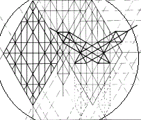
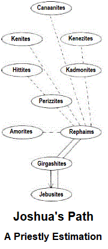

Joshua's Report
You know Caleb! The Father has filled his heart so wonderfully with concern for all men. He gets around much more than I because of his nature, and he has a more fully developed overview of the situation in Canaan than I shall be able to present. In the service I have learned at the hand of Moshe, it has been necessary for me to limit my naturally less gregarious nature even beyond its inclinations, that my mind can remain open to the many voices of the oracles as they apply themselves to our movements in the land.
I will do my best to fulfill Caleb's expectation that I will be able to give fuller insight on some matters than he. Certainly, I cannot; but what I have been provided will add to your understanding of what he has been given. As you blend our reports in your minds, the Father, Himself, will doubtless give you yet greater understanding than shall come from our reports, taken together or separately. Keep HaShem always as the focus of your minds; serving him according to our positioning within our separate callings serves all.
When I first arrived at Malkuth, I found the distractions of the place to be quite unsettling-- almost threatening. Such confusion! I became separated from the others quite early; and I looked for a place that offered relative quiet, so that my spirit could reassert itself, allowing me to regain some composure. As I was granted control over my reactions, I discovered that the general uproar within the land does not prevent something close to normal interchange between its peoples.
The Canaanites are apparently hardened to the tenor of their lives, and are able to discuss even things of import in such an environment; but you will find that the long discussions to which we are accustomed will not be tolerable for them. Their attention spans are short, and they are easily distracted. Our ministrations to them must be in few words with poetic implications that will work in their memories over time. Our tradition of parables has prepared us well for this service.
Yesod lies directly above Malkuth as you head north, according to the natural wisdom, and east according to the revelations of Torah. There is only one way forward at the Malkuth crossing; so you will have no difficulty with direction.
After reaching Yesod, the road forks into three branches; and some of you will have more difficulty following one route than another because of the nature of the land's peoples in relation to your own predispositions. The ten who spoke before Caleb have characterized the Canaanites sufficiently for you to know which peoples might benefit most from your presence among them.
Do not let the misery of the people dominate your judgments of them. Like us, they have been fashioned by HaShem and have roots in Adam. Remember the teaching concerning Pharaoh: though the judgment of HaShem fell upon him devastatingly, God testified that it is he who raised Egypt's ruler to such a fall, and that it is he who hardened Pharaoh's heart against warning, for the purpose of teaching the chosen his ways.
Though we learn from the fall of Pharaoh, we do not long rejoice in his fall; rather, we praise HaShem for causing even the children of darkness to serve in the perfection of the Children of Light. Furthermore, from those who must perish of Canaan, a remnant shall escape; for the bird is not taken with her young. Remember the remnant in your prayers, that they may repent of their bondage to error and live unto fulfillment of the promise that not one such shall remain. There is a goat for the altar, because of judgment, and a goat for the wilderness, because of mercy.
Whether the people of the land will hear or whether they will forbear is not in your hands, but in the hands of Yahuwah Elohim. Neither weary your souls because of them, therefore, nor burden their souls overmuch with guilt because of your words to them. Minister peace. Trust HaShem.
Those who cannot hear will either be transformed or driven out in the fullness of time; and HaShem knows how to bring them back again. Those who shall remain among us will remain only so long as their souls can benefit from our witness. Should it later become necessary for some of these to be removed also, HaShem will drive them out, also. It is the righteousness of our faithful la to perfect every spirit he has entrusted to Earth.
Upon arriving at Yesod, I fell in with a family of three who were traveling from Netsach. I found I was able to relate more easily to these than to what others I encountered in the city-- especially than to the city's permanent residents. The Girgashites of Yesod are elusive. It's not that they are inquisitive, but the few I talked with seemed always to respond from some hidden motivation; and I was not inclined to probe beneath the surface, as I expected to find better opportunity for learning of the Canaanite peoples.
Our Heavenly Father fulfilled my expectations by sending me the Rephaim family. They had come to see the healer living in Yesod, on behalf of their daughter, whose feet and legs had been subject to periodic swelling for several years. The family came to Yesod weekly to purchase potions to reduce the swelling. At first the medicine had some beneficial effects, but the swelling soon increased in severity in spite of the palliative.
The Rephaims idolized the healer and did not think to question his wisdom or his methods. If the child were to worsen and die, they confided to me, certainly there was no better man in all of Canaan to care for her unto the end. When I told them I might know a better man, they protested my ignorance; but I could tell they were interested in hearing what I had to say. I asked them of their diet and such. It happened that the father was a swineherd by profession; and, consequently, they ate a good deal of pork.
I told them of how Moshe stood before the plague for the lives of thousands with success, and of the laws and the outstretched hand of his Elohim, which enabled him to work such miracles in the sight of the people. I explained that the dietary proscription against eating pork was given, in part, for our health, as its oils can cause many difficulties in humans, such as swelling of the legs and feet, and because it can contain parasites not easily eliminated through cooking. I did not tell them of higher interpretations; they would not have welcomed them. I offered them only the letter given us by Moshe, and they found reason in it for hope: because it stands against the adversary of life.
The father complained, at first, that the change in diet would be a lot of trouble, given his profession. Not only would it be expensive to replace the pork at the table, it would also be damaging to his business if his customers should hear that his daughter could not eat the flesh because of health.
I offered to walk along the way with him as he traveled home and to give what advice I could. His mind was eased so quickly by the offer of help that I was much surprised by the change, until I remembered the meaning of the root word for the tribal name. Then I praised Elohim for making the trouble the beginning of the remedy, singing in my heart the song of the psalmist as it was otherwise leavened for use in the marketplace, "He not busy being born is busy dying."
As we traveled towards their home in Netsach, I asked the man if he had ever considered making other use of the swine with which our Father has blessed us in wisdom. He made signs to his wife that I must be a little touched by the Evil One. I ignored this and continued to minister to them, telling him that I had heard of a swineherd in Egypt who would not knowingly sell animals for meat, but sold them as workers. The Egyptian swineherd ran a composting farm and used the animals to rout among the decaying matter, that it might age more quickly. He was able to feed both the herd and his family sufficiently well on income from sale of fertilizer and franchise stock.
The Rephaim was interested in the idea and thought that he might give it a try. We talked a bit about diet and such and, generally, of the people of the land. He rewarded me greatly in conversation for my little help; indeed, I had sufficient information from him to be able to spend nearly all of my sojourn in Canaan at his home, learning by his life's experience details I could not have learned walking briefly through the land on my own.
Whether my diagnosis of the daughter's illness was correct, HaShem knows. He also knows, however, that the man is considering change. We all must cross the greater Yordan. Even if the girl has some other problem, HaShem is capable of healing her at this time for the expedience of the father and the family.
Although the Canaanite tribe rules the land by delegating power to the Kenites, the Hittites, and the Jebusites, the daily administration is under the charge of the Perizzites. Their oppressive stewards notwithstanding, however, the people of Canaan are in fact ruled by their own emotions, which predominate inordinately without the active service of focused intellect. The routine Canaanite deferral of authority to the Perizzites is an extension of this dynamic, and should their hearts be circumcised in the precepts of Yah, this would act to our advantage; for a change in the Perizzites would be quickly noticed by all.
Where an active intellect rules by the natural wisdom that arises from and is filtered through emotion, there is even greater darkness than when the heart rules darkly-- savagely-- on its own. Both circumstances are deplorable; but the fruit of a domineering heart is apparent: its covering is thin and vicious, whereas the fruit of natural intellect distilled by the emotional bias that arises when the heart has covertly exalted itself beyond measure, has slyness: a doubled, thicker covering, which conceals it from easy scrutiny.
The Perizzite masters rely heavily both on the Kadmonites, as recounted by Caleb, and also on the Kenizzites. They are in fear of the Kenizzites, however, for what they call their "intellectuality"; and they do not deal with them directly, but gain the rumor of their opinion through the Kadmonites, whose nature more closely resembles their own. It is my opinion, therefore, that a great effort should be made to undermine the position of the Kadmonites in the country.
The Kenizzites will not comprehend our logic and will actively war against us, should their status be directly threatened by it. They will not be willing, however, to admit to the Kadmonites and the Kenites, with whom they have the most dealings, that they don't know what we are talking about. Though they may ridicule our thought, vanity will impel them to conjecture upon its basis in reality and upon its implications for their lives. They may, therefore, inadvertently become our allies for their overthrow, against their own wills.
Now, as concerning the Kadmonites: we have heard they divide the world into groups of "us and them, the haves and the have-nots," and so forth. They will have a very bad opinion of us from the onset, and it is possible that HaShem will deem it necessary that the greater number of them be driven from the land peremptorily. Whatever of them are permitted by Elohim to remain however, must be won over to the pattern of HaShem by subtle mockery, seeming as praise.
The Kadmonites and Kenizzites are the closest thing in Canaan to the priestly castes. We are to destroy their altars, to break down their images, to cut down their groves, and to burn their images with fire. As we understand "fire" to signify wisdom, we must be certain that we act in wisdom to accomplish this great deliverance.
We must applaud their idolatry for the poverty of mind and spirit it has brought to the peoples of the land; and we must lament our greater blessings, bemoaning them as nothing by comparison. We must become the embodiment of "them" to them, to make a way for them to take their place as "us." Maybe I didn't say that too well. We must become as blind, so that they can become as we who see.
As we sacrifice ourselves thus in the service of The Name, their strange elohim will be destroyed not only upon the pedestals on which the people have erected them (the groves), they will also be destroyed in the very bellows from which they come. The people shall think to recast their images, but shall build closer to the true image we have insinuated into their hearts and minds. Their projections of Elohim shall therefore begin to approximate our Living Elohim.
When this occurs, we can join them as brothers and instruct them more perfectly in the Father's ways; for their walk will have added greatly to our understanding of our own. Truly, we are all brothers in Adam. We long for the day when we shall be brothers, also, in Yaaqov.
Let us always be mindful of that future day as we walk among them, because our actions must raise praises to the name of Yahúwah, carrying the sweet savor of acceptable sacrifice. The promised land comes by our keeping faith. As we bend the knee in the service of HaShem and in obedience to the holy Torah, we will most certainly come to our full inheritance, enjoying the nutrition of milk and the satisfaction of honey in all our exchanges. Barak-la!
|
site |
Beyond Jordan |
book |